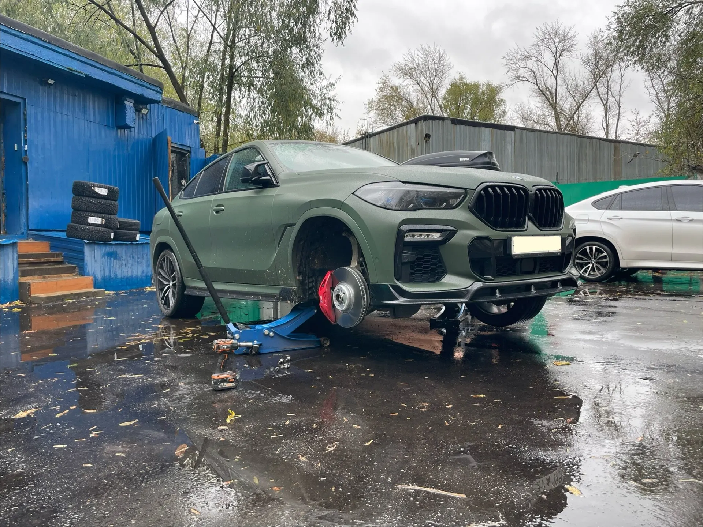
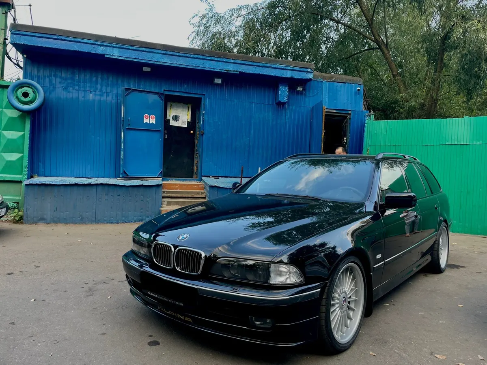
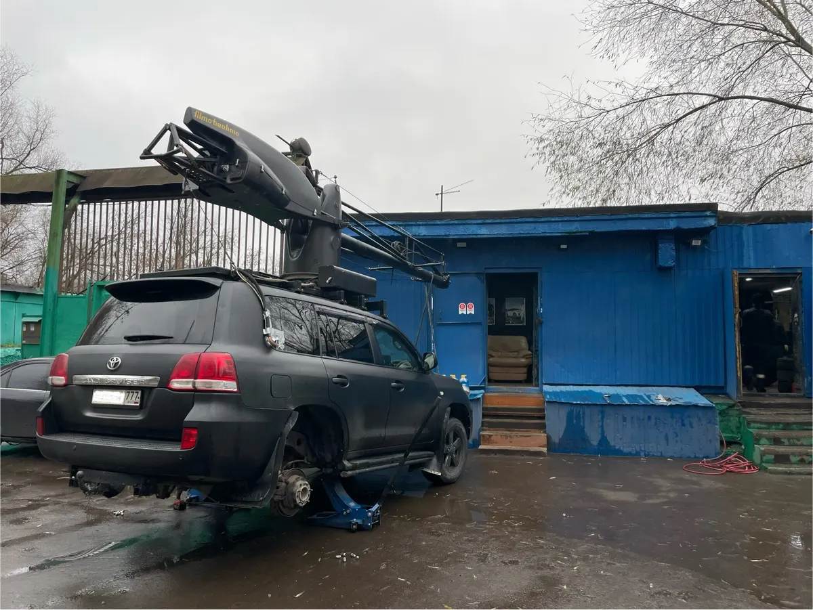
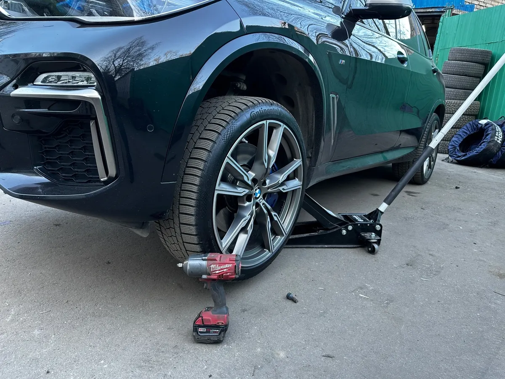

Шиномонтаж · Ростокино, Малахитовая, 22
Шиномонтаж Yauza – переобуем, отбалансируем и дошипуем у Яузы
Малахитовая улица, 22, стр. 1. Переобувка, балансировка, дошиповка, правка и проточка дисков, хранение шин. Ежедневно с 10:00 до 21:00.
- Ежедневно 10:00–21:00
- 216 оценок, рейтинг 5,0
- Дошиповка и хранение шин

Услуги и цены
Цены с карточки на Яндекс Картах, обновлены 26 октября.
Шиномонтаж
- Шиномонтаж 4 колёсот 2400 ₽
- Балансировкауточнить
- Ремонт проколауточнить
Шипы и хранение
- Дошиповка, за шип20 ₽
- Дошиповка Michelin, за шип25 ₽
- Сезонное хранение шин и колёсот 5000 ₽
Диски и шины
- Правка и прокатка дисковуточнить
- Алмазная проточка, сварка аргономуточнить
- Б/у и новые шиныот 1000 ₽
Точную сумму под ваш радиус назовём при записи.
Как проходит
- 01
Записываетесь или пишете в WhatsApp
Подскажем, есть ли сейчас очередь и когда лучше приехать.
- 02
Заезжаете на Малахитовую, 22
Синий бокс за зелёным забором, рядом площадка для машин.
- 03
Переобуваем и балансируем
Если что-то не нравится – покажите, поправим на месте.
- 04
Колёса можно оставить у нас
Хранение шин и колёс до следующего сезона.



За чем к нам едут
Быстро
«Очередь в три машины прошла минут за 20» – из отзыва на Картах.
На связи
Можно написать или позвонить и узнать, есть ли очередь, до выезда.
Шипы и диски
Дошиповка любых марок, правка, прокатка и проточка дисков.
Отзывы с Яндекс.Карт
«Обратилась в шиномонтаж и осталась очень довольна! Мастера работают быстро, качественно и профессионально. Персонал вежливый, всё подробно объяснили и помогли с выбором услуги. Обязательно обращусь сюда ещё раз и буду рекомендовать знакомым!»
Ди Скитова · 5 ноября 2026
«Ваще чёткий шиномонтаж! Всё сделали быстро и качественно, рекомендую , когда делали машину, налили кофе в удобное место, даже чтобы отдохнуть , всем советую !»
Борис Асанов · 31 октября 2026
«очень хороший сервис,приехал за час до деловой встречи,пробил шину,заменили очень быстро,ребята очень стараются они заслуживают чаевых :)»
Алексей Долгопрудный · 29 октября 2026
Отзывы с карточки на Яндекс.Картах, без правок.
Частые вопросы
Как вас найти?
Малахитовая улица, 22, стр. 1, Ростокино. Синий бокс за зелёным забором.
Нужна ли запись?
Можно в живую очередь, но с записью приедете к своему времени. Очередь можно уточнить в WhatsApp.
Делаете дошиповку?
Да, ставим ремонтные шипы на любые марки, в том числе Michelin.
Можно оставить колёса на хранение?
Да, храним шины и колёса до следующего сезона.
Запишитесь, чтобы не ждать в очереди
- Адрес
- Малахитовая улица, 22, стр. 1, Москва
- Часы
- Ежедневно 10:00–21:00
- Телефон
- +7 (915) 302-04-55